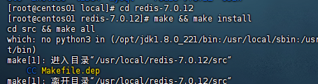

Redis本身就没有针对Window系统进⾏开发，所以⾸先需要准备⼀台虚拟机系统采⽤：CentOS7即可
官⽹⽹址：https://redis.io/
官⽹下载地址：https://redis.io/download/
卸载
之前已经安装过Redis5，现在要安装Redis7
查看是否已启动：
ps -ef|grep redis以上表面Redis并没有启动
如果Redis下启动状态，需要杀死相关进程：
kill -9 进程号删除make的生成的redis为前缀的文件
执行
ll /usr/local/bin，查看文件执行删除命令
rm -f /usr/local/bin/redis*查看文件是否已经删除执行
ll /usr/local/bin
删除redis的文件夹和相关tar包：
rm -rf xxx
安装
Redis是基于C语⾔编写的，需要此依赖对Redis源码进⾏编译，需要安装gcc
yum install -y gcc tcl # 安装 gcc --version #测试 gcc版本将从官网下载下来的Redis，通过finalshell，拖入到指定目录中，这个目录随意，我喜欢在
/usr/local目录下在
/usr/local下，解压gz文件：tar -xzvf redis-7.0.12.tar.gz这个时候，多出一个Redis的文件夹
进入到这个文件夹，进行安装和编译：
make && make install # 编译且安装默认安装路径存在于：
/usr/local/bin
启动
默认启动
启动redis可以在任何⽬录位置都⾏，因为已经加⼊环境变量了，不⼀定⾮要进⼊安装⽬录，启动命令为：
redis-server
当然此时这种启动⽅式为：前台启动，也就是说，我们如果此时想去连接Redis服务端，需要在开启⼀个窗⼝，此窗⼝状态⼀致保持，如果此时停⽌，Redis也就停⽌了，所以这种⽅式并不是很友好
这个状态下，ctl+c就可以关闭Redis
指定配置启动
如果想要进⾏后台启动，我们就需要修改Redis配置，我们需要修改的⽂件为：/usr/local/redis-7.0.12/redis.conf
在修改前，先备份配置：
cp redis.conf redis.conf.bck具体需要修改的配置
# 监听地址，默认为127.0.0.1，所以只能本地访问，我们可以修改为0.0.0.0，表示任意IP访问，但是注意，此设置仅⽤于测试 bind 0.0.0.0 # 将守护进程，从默认的关闭改为开启，即为后台运⾏ daemonize yes # 设置访问密码，任意访问，但是需要密码 requirepass 753159 # -----------------常⻅配置（按情况⾃⾏调整，建议增加⽇志）------------------- # 监听的端⼝ port 6379 # ⼯作空间，默认是当前⽬录，运⾏redis-server时的命令，⽇志、持久化等⽂件会保存在这个⽬录 dir . # 数据库数量，设置为1，代表只使⽤1个库，默认有16个库，编号0~15（MySQL可以⾃⼰创建Redis不需要但是可以指定数量） databases 16 # 设置redis能够使⽤的最⼤内存 maxmemory 512mb # ⽇志⽂件，默认不记录⽇志，可以指定⽇志⽂件名来开启记录⽇志 logfile "redis.log"暂时只要修改：bind，daemonize，requirepass，logfile 这四个
修改：
vim redis.conf在vim里面查找相关配置：
:/要查找的关键字可以用注释代替删除
注意requirepass是注释掉了
启动Redis：
redis-server redis.conf # 后天启动Redis ps -ef | grep redis # 查看redis运⾏的进程号 kill -9 76786 # 杀死进程
开机自启动
Redis最简单的启动⽅式就是开机⾃启动，就好像MySQl那样，通过系统服务来进⾏⾃启动，Redis也可以做到。
新建系统服务
vi /etc/systemd/system/redis.service具体要修改的内容如下：
[Unit] Description=redis-server After=network.target [Service] Type=forking ExecStart=/usr/local/bin/redis-server /usr/local/redis-7.0.12/redis.conf PrivateTmp=true [Install] WantedBy=multi-user.targetExecStart=/usr/local/bin/redis-server /usr/local/redis-7.0.12/redis.conf：这个要配置自己安装的redis.conf文件的路径重载系统服务
systemctl daemon-reload执⾏此命令让redis服务开启开机⾃启动
systemctl enable redis重启虚拟机（
reboot），看看是否修改成功
配置自启动后，reidis的新操作
# 启动
systemctl start redis
# 停⽌
systemctl stop redis
# 重启
systemctl restart redis
# 查看状态
systemctl status redis
Redis自带的客户端：redis-cli
使用redis-cli连接Redis
redis-cli [options]options代表具体的⼀些选项，⽐如常⻅的如下：
- -h 127.0.0.1：指定要连接的redis节点ip地址，默认是本机（不需要写）
- -p 6379：指定要连接的redis节点的端⼝
- -a 753159：指定redis访问密码
测试是否连接：Ping
Ping 命令使⽤客户端向 Redis 服务器发送⼀个 PING ，如果服务器运作正常的话，会返回⼀个 PONG 。
redis-cli里面的一些基础命令：
select 0 # 切换数据库 dbsize # 查看数据库⼤⼩ set name qf # 存⼊数据 get qf # 取出数据 keys * # 查看所有的key flushall # 清除全部库数据 flushdb #清空当前库数据
转载请注明来源，欢迎对文章中的引用来源进行考证，欢迎指出任何有错误或不够清晰的表达。可以在下面评论区评论，也可以邮件至 1909773034@qq.com